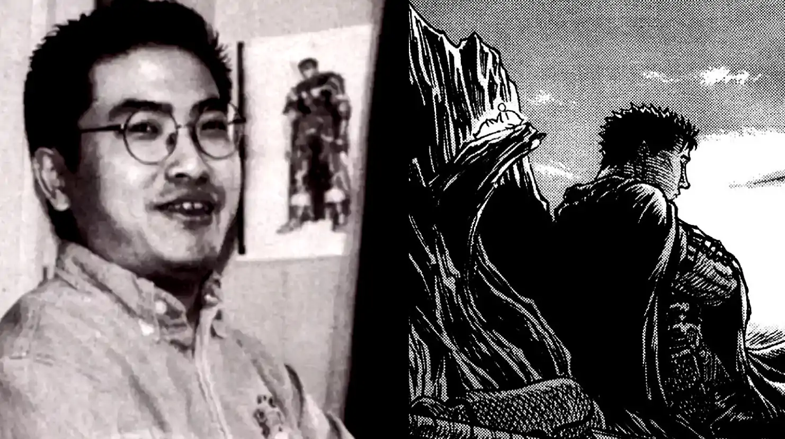

Kentaro Miura, (11 de julio de 1966 - 6 de mayo de 2021), fue un dibujante de manga japonés. Entre otras obras, fue autor de Berserk.

Kentaro Miura, (11 de julio de 1966 - 6 de mayo de 2021), fue un dibujante de manga japonés. Entre otras obras, fue autor de Berserk.
El nacimiento de una obra legendaria Hablar de Berserk es hacerlo también de Kentaro Miura. Mientras trabajaba como asistente de George Morikawa a los 18 años, Miura ya había planeado algunas ideas para el desarrollo de Berserk, teniendo un guerrero oscuro con una espada gigantesca ilustrado en su portfolio, siendo este la primera concepción de Guts. En 1988 trabajaba en un manga cuando publicó un prototipo de Berserk, unas 48 páginas que le dio el segundo puesto en la séptima edición de ComiComi. Miura declaró que al principio no tenía muy clara su inspiración ni información sobre los berserkers, pero posteriormente afirmó que el título era perfecto para representar su universo, resumiéndolo de la siguiente manera: “todo nacerá a partir de un mundo con un héroe oscuro que se está quemando de venganza y tiene carácter rabioso. Estará guiado por su ira, derramándola sobre enemigos vencidos”
